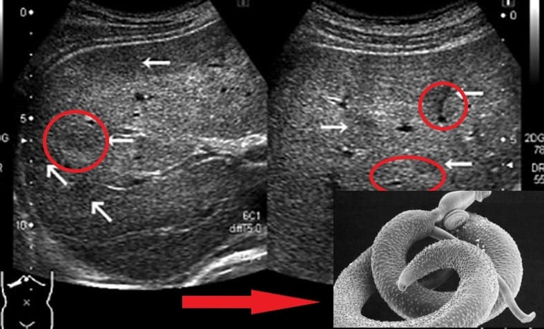
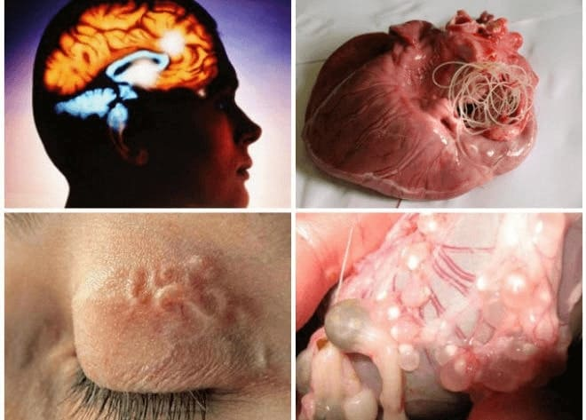
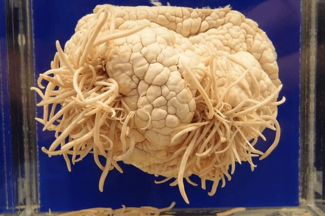
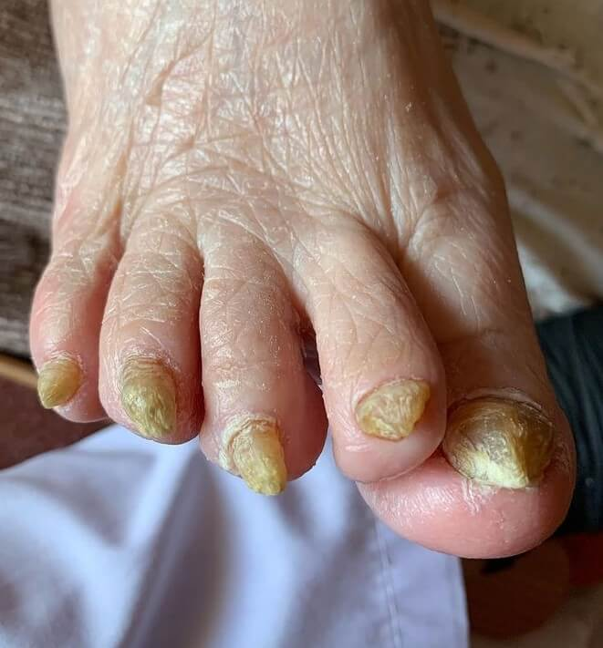
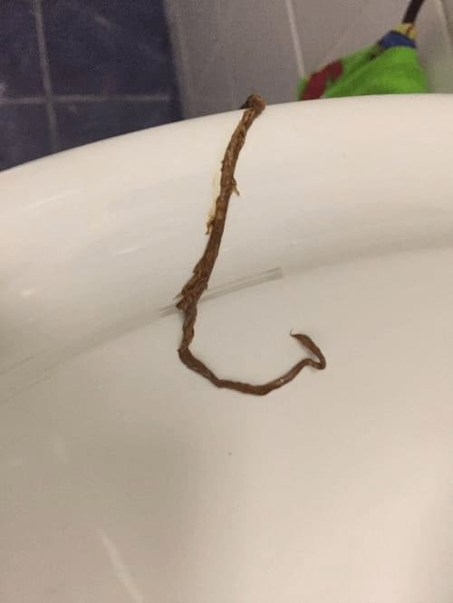
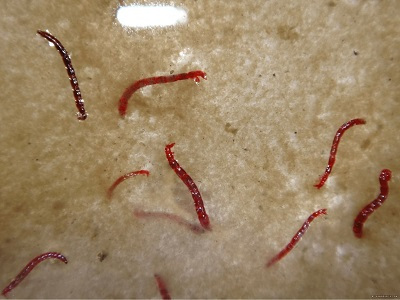
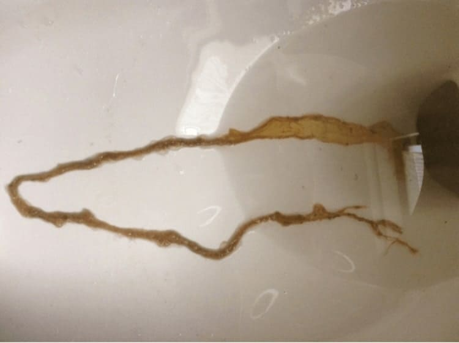
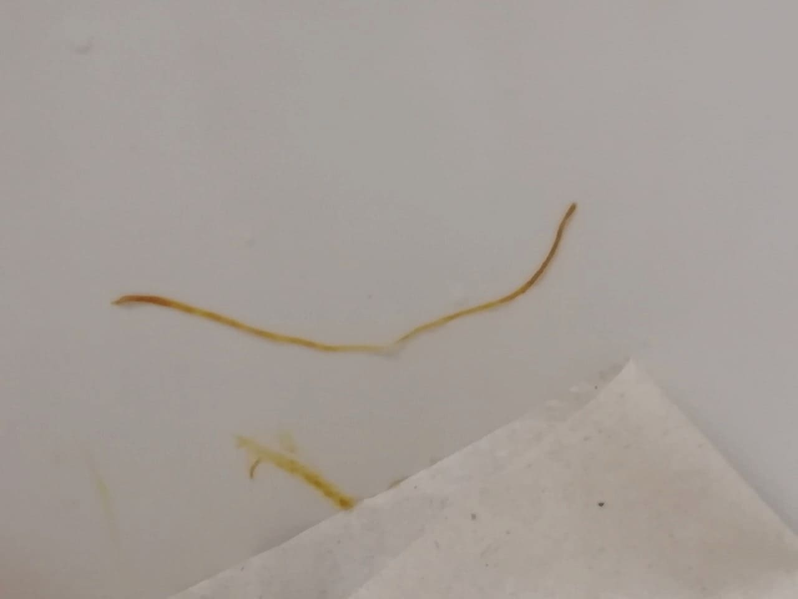

Corneliu Stănescu - specialist în domeniul anatomopatologiei la Principala Clinică cu 40 de ani de experiență.
Reporter: Bună Ziua, Domnule Corneliu Stănescu! În conversația preliminară, trebuie să recunosc, m-ați șocat. Eu încă nu pot scoate cuvintele Dvs. din capul meu că:
"Oamenii cred că viermii îi vor mânca după moarte, dar de fapt sunt devorați din interior în timpul vieții sale."
Corneliu Stănescu Stănescu: Deci așa și este cu adevărat. Aproape 90% din timp când fac o autopsie, văd o imagine teribilă. Trupurile morților sunt infestate cu paraziți! Și le observ nu numai în tractul gastro-intestinal, așa cum cred mulți oameni. Paraziții trăiesc adesea în plămâni, inimă, ficat și chiar în creier! Coloniile lor locuiesc în organele interne, iar larvele se hrănesc cu țesuturile oamenilor vii!
Chiar ieri am făcut o autopsie: o femeie, de 50 de ani. A murit de insuficiență cardiacă. Se pare că ce legătură au paraziții cu asta? Și în ciuda faptului că produsele lor reziduale duc la întreruperea activității tuturor organelor, inclusiv a inimii. Am găsit un număr mare de paraziți în intestinele ei. Din păcate, cu astfel de ”vecini” oamenii nu pot trăi mult timp.
faceți clic
Un alt caz: bărbat, 61 de ani. A murit de ciroză hepatică. Rudele cred că de vină este alcoolul. Numai că nu a băut atât de mult și nu au rămas urme de distrugere alcoolică a ficatului, dar ficatul a fost pur și simplu mâncat de paraziți, am găsit sute de căi prin care se mișcau viermii.
faceți clic
Un alt caz care m-a șocat cu adevărat. Creierul unui bărbat de 49 de ani era complet populat de paraziți și larvele lor. Cauzele morții - accident vascular cerebral ischemic cerebral. Dar aceasta este doar o consecință! De fapt, paraziții pur și simplu se hrăneau cu țesuturile creierului uman, l-au devorat de viu! În timpul vieții sale, persoana a suferit de dureri de cap, a avut tulburări de somn și memorie. Apoi, când multe zone au fost deja afectate, a fost adăugată epilepsia. Șase luni mai târziu a murit.
faceți clic
O altă poveste care s-a întâmplat nu de mult timp. Persoana a murit de cancer intestinal, cauzat de paraziți. Paraziții otrăvesc celulele sănătoase cu toxinele lor, motiv pentru care sunt forțați să renască, să-și schimbe structura. Și se renăscă anume în celule canceroase care sunt mai agresive și capabile să reziste paraziților. Dar pentru oameni, aceste celule sunt distructive. Tumora se dezvoltă rapid și metastazează. Persoana moare în câteva luni.
faceți clic
"Căile" paraziților în lumenul intestinal
Acestea nu sunt date aproximative, ci statistici exacte — cauza a 78% din decesele "naturale" sunt paraziții. În număr absolut, aceasta este de aproximativ 1, 5 milioane de decese în ultimul 2021.
"Oamenii mor din cauza paraziților - vă distrug organele, vă otrăvesc sângele cu toxine, se hrănesc cu țesuturile creierului și plămânilor!»
Corespondent: Nu-mi vine să cred! Sună terifiant
Corneliu Stănescu : Apropo, ați știut că 99,87% din cazurile severe a virusului puternic sunt persoanele cu infecție parazitară? Dacă nu ar avea "vecini", ar fi suportat totul asimptomatic. Și așa — acesta este principalul grup de risc. Colegii mei și cu mine întâlnim constant infestarea cu paraziți în timpul autopsiilor celor care au murit din cauza infecției cu acest virus. Și din nou, nimeni nu vorbește despre acest lucru, deoarece apare imediat întrebarea — care este motivul pentru un număr atât de mare de cazuri de infecție parazitară?
Corespondent: Și care este cauza răspândirii infecției? De ce atât de mulți oameni suferă și mor din cauza asta?
Corneliu Stănescu : Motivul este simplu. În țara noastră, există boli care, în general, nu sunt supuse terapiei. Oare cineva se ocupă serios de problema infecției parazitare din țara noastră? Și, sincer, oamenii din țara noastră nu sunt cei mai responsabili. Ei merg la specialiști când este prea târziu. Oare acordă cineva atenție durerii abdominale, constipației, diareei, balonării? Și acestea sunt primele clopote care nu pot fi ignorate.
Lucrez ca specialist în domeniul anatomopatologiei de mulți ani. Am văzut lucruri care fac părul să se ridice pe corp! Oamenii subestimează pericolele, cred că paraziții sunt viermi care trăiesc în intestine. Dar acest lucru nu este adevărat. Există un număr mare de tipuri de paraziți. De exemplu, sunt microscopice, dar foarte toxice. Vă otrăvesc organismul, pătrund în sânge, în inimă, îl epuizează cu toxinele lor, duc la ischemie, insuficiență cardiacă, hipertensiune arterială și, ca urmare, atacuri de cord și accidente vasculare cerebrale. Se stabilesc în plămâni, ficat, pătrund în creier și chiar trăiesc în ochi!
Reprezentanții helminților care afectează organele vitale sunt Taenia solium, Echinococcus (Echinococcus granulosus), Trichinella (Trichinella spiralis). Echinococul este o etapă larvară a unui helmint din genul Echinococcus. Și acestea nu sunt tot felul de paraziți care pot ucide o persoană.
Dar specialiștii sunt obișnuiți să lupte cu consecințele, nu cauza bolilor de inimă. În țara noastră corupția este în creștere. Nimeni nu se ocupă serios de această problemă. Înșelăciune este peste tot.
Corespondent: De ce crezi că se întâmplă asta? De ce este ignorată problema infecției răspândite cu paraziți în țara noastră?
Corneliu Stănescu : Da, oamenii mor în masă. Noi, specialiștii în domeniul anatomopatologiei, scriem doar cauza finală a morții și nimeni nu exprimă faptul că infecția cu paraziți duce la moarte, nu este acceptată.
Este imposibil să respingem vina proprietarilor lacomi a corporațiilor farmaceutice. Ei nu doresc să vândă remedii cu adevărat eficiente pentru paraziți în țara noastră, încercând să le trimită în străinătate.
Corespondent: Ele măcar există aceste remedii? Cum pot oamenii să se protejeze și să-și salveze viața?
Corneliu Stănescu : Desigur, există mijloace bune. Dar nu le puteți cumpăra atât de ușor într-o farmacie. Remediile antiparazitare, care sunt vândute în farmacii private și care sunt prescrise în policlinici, îndeplinesc o funcție importantă – pompează bani din buzunarele persoanelor în buzunarele oligarhilor.
Judecați singuri. Persoana ia o pastilă, starea ei pare să se îmbunătățească. Dar paraziții sunt extrem de tenace! Ouăle lor au o coajă extrem de puternică. Și de îndată ce efectul remediului se oprește, se înmulțesc din nou, larvele lor devorează organismul din interior, pătrund cu fluxul sanguin în inimă, plămâni, ficat și creier. Mușchiul inimii slăbește, se uzează rapid, imunitatea scade, apare oncologia.
Milioane de colonii de paraziți inundă întregul organism și pătrund cu curent în inimă, plămâni, rinichi, ficat și chiar în creier!
Mulți oameni cred că este suficient să luați o pastilă, și problema va fi rezolvată. Dar nu este așa! O pastilă nu o va face, este pur și simplu imposibil! Și dacă beți în mod constant substanțe chimice agresive, acestea vor distruge organismul chiar mai repede decât paraziții. Se dovedește un cerc vicios. Dar este profitabil ca farmaciile private să le vândă, remediile antiparazitare sunt scumpe. Cu cât cumpără mai mult, cu atât farmaciile private și afacerile farmacologice vor deveni mai bogate.
Creierul afectat de paraziți
Corespondent: Și ce ar trebui să facă oamenii obișnuiți?
Corneliu Stănescu : Ce să fac? Să se lupte cu sistemul nostru de vânzări, pentru a nu interfera cu furnizarea remediilor eficiente în farmaciile private, pentru a nu ridica prețul produselor existente, pentru a nu le vinde în străinătate în cele din urmă!
Și oamenii înșiși nu ar trebui să fie leneși și să ia măsuri la primele simptome de infecție și să nu aștepte până paraziții te vor ucide.
Corespondent: Ați vorbit despre un remediu bun care poate scăpa de paraziți? Ce remediu este acesta?
Corneliu Stănescu Grișin: Da, am vrut să spun despre "". Acesta este un remediu unic și singurul în două faze care poate distruge tot felul de paraziți și, în același timp, este complet sigur pentru oameni.
"" — aceasta este o dezvoltare a Centrului pentru Biologie Moleculară. La Congresul Internațional de la Geneva, a primit Premiul European "Pentru o descoperire în Medicină" și a fost recunoscută de experții în domeniul parazitologiei de frunte din întreaga lume.
Spre deosebire de analogi, "" — este un complex foarte puternic, dar în același timp complet natural
La administrarea cursului "" nu numai că elimină complet paraziții, dar îmbunătățește și microflora intestinală, întărește sistemul imunitar, restabilește organismul după intoxicație.
Se pare că, după o astfel de recunoaștere, farmaciile private ar trebui să stea în linie pentru dreptul de a vinde "". Statul ar trebui să adopte acest instrument. Dar nu. Tăcere completă, de moarte. Părea că nimeni nici nu a observat descoperirea.
Rezultatele studiilor clinice, privind acțiunea produsului "". 1250 de participanți.
|
100% |
Curățarea de invazia parazitară |
|
100% |
Normalizarea tractului gastro-intestinal |
|
80% |
Normalizarea nivelului de zahăr din sânge |
|
75% |
Îmbunătățirea bunăstării |
|
70% |
Nu s-a îmbolnăvit niciodată după un curs de "" |
Corespondent: Și cât timp trebuie să luați aceste capsule pentru a vă asigura că organismul dumneavoastră este curățat?
Corneliu Stănescu : "" curăță treptat, acționează în mod consecvent, pas cu pas:
1 săptămână
Datorită reducerii efectelor toxice ale paraziților, dispar oboseala și apatia. Digestia și apetitul se normalizează. Veți observa o îmbunătățire a dispoziției și o creștere a performanței deja în prima săptămână a cursului
2-3 săptămâni
Datorită efectului suplimentar de îmbunătățire a sănătății extractelor de plante, imunitatea dvs. va deveni mai puternică, reacțiile alergice și alte probleme de sănătate vor scădea.
4-5 săptămâni
De îndată ce efectele toxice ale paraziților asupra organismului se vor opri, veți observa îmbunătățiri externe evidente și chiar un efect de întinerire. Vor începe să dispară erupțiile cutanate, inclusiv papiloamele.
6-7 săptămâni
Sistemul digestiv și toate procesele interne se vor normaliza, excesul de greutate va dispărea, tensiunea arterială va reveni la normal, inima va funcționa ca un ceas. Mulți oameni au probleme de sănătate după curs, care îi deranjează de mulți ani. Vă veți prelungi viața timp de 10-15 ani!
Scapă de 7 boli în 7 săptămâni!
Reporter: Ce va primi o persoană după un curs de curățare a organismului cu ””? Cum se va îmbunătăți starea lui?
Corneliu Stănescu : Oh, persoana după curs de "" va primi multe avantaje! La urma urmei, paraziții au un efect dăunător asupra întregului organism. Și ca urmare a terapiei, organismul este complet curățat, mulți spun că se simt ca și cum s-ar fi născut din nou.
Priviți singuri:
1. Presiunea revine la normal
În primul rând, este o reînnoire completă a inimii și a vaselor de sânge. 7 săptămâni de administrarea regulată "" sistemul vascular este complet curățat. Cu alte cuvinte, vasele prind viață și "sting" fluctuațiile tensiunii arteriale fără probleme. Vasele compensează orice cădere și vor menține o presiune stabilă de 120 până la 80.
2. Îmbunătățește alimentarea cu sânge a creierului
După cursul terapiei de "" sângele se purifică cu 73%, precum și circulația cerebrală se îmbunătățește
Oamenii sunt încântați să observe că:
- Se îmbunătățește memoria.
- Somnul se normalizează, letargia și slăbiciunea dispar.
- Dispare zgomotul în urechi.
- Durerile de cap se opresc.
3. Corneea și retina se restaurează, vederea se îmbunătățește
"" curăță de toxinele parazitelor nu numai vasele și arterele mari, ci și cele mai mici capilare. Cel mai multe dintre ele sunt în ochi. Aceasta duce la reînnoirea celulelor retiniene și la o îmbunătățire a tonusului muscular al ochilor.
- Îmbunătățește acuitatea vizuală de la 0,5 la 2,1 unități.
- Presiunea ochilor este normalizată.
- Simptomele cataractei sunt reduse.
4. Trec umflăturile
Se restabilește buna funcționare a rinichilor și metabolismul fluidelor în organism. Rinichii nu mai rețin apă și nu este nevoie să luați diuretice.
- Picioarele nu mai dor și nu se umflă.
- Abdomenul se va micşora, deoarece umflarea organelor scade.
- Lichidul din plămâni este eliminat, devine mai ușor să respiraţi.
5. Stomacul și intestinele nu mai deranjează
Cele mai pronunțate probleme datorate paraziților:
- Balonare, formarea crescută a gazelor, eructații.
- Probleme cu scaunul.
- Tulburări digestive, respirație urâtă.
- Gastrită, ulcere, arsuri la stomac, aciditate crescută.
6. Inima se restaurează
Curățarea de paraziți are un efect pozitiv asupra tonusului mușchiului cardiac. În 93% din cazuri, tahicardia trece, în 99% este eliminată.
- Se normalizează ritmul cardiac și ritmul pulsului.
- Dispare durerea din inimă.
- Riscul de atac de cord este redus de 17 ori.
7. Starea pielii se îmbunătățește
- Papiloamele și negii dispar.
- Pielea devine mai curată, hidratată, ridurile devin mai netezite.
- Trec erupțiile cutanate, acnee, tenul devine mai proaspăt.
Sistemul imunitar începe să funcționeze la capacitate maximă și protejează împotriva cancerului!
Imunitatea se formează în intestin. Și paraziții slăbesc foarte mult apărarea imună a organismului nostru. Imunitatea este un apărător nu numai împotriva virușilor, în special a celui care este la modă acum. Funcția principală a imunității puternice - protecția împotriva celulelor canceroase. Un sistem imunitar puternic recunoaște și distruge celulele canceroase în timp. Nu permite apariția unei tumori.
Imunitatea, care funcționează cel puțin 50%, este deja o barieră insurmontabilă pentru viruși. Și acest lucru este, de asemenea, foarte important astăzi.
Scăpați de paraziți și prelungiți-vă viața cu 15-18 ani!
Reporter: Aэi spus că nu puteți cumpăra "" în farmacii private. Dar încă o puteți obține, nu?
Corneliu Stănescu : Da, toți cetățenii pot comanda "" prin Internet direct de la producător la o specială program preferențial.
Corespondent: De ce poate fi prescris acest remediu numai prin Internet?
Stănescu: Acest lucru se face din trei motive:
- Asigurarea calității. "" sunt trimise direct de la fabrică către cumpărător.
- Protecția împotriva intermediarilor. Pentru ca nimeni să nu poată adăuga 10-20-30 mii la revânzare.
- Livrare rapidă.
Beneficii regionale pentru pensionari!
Corneliu Stănescu : Programul Fondului de sprijin Social funcționează în prezent în 5 regiuni. Conform acestui program, puteți comanda "" cu reducere de la 40% la 100%.
Beneficiile sunt acordate în principal persoanelor cu vârsta peste 45 de ani care trăiesc în regiuni cu o situație epidemiologică ridicată:
- București și Județul București
- Brașov,
- Constanța,
- Iași.
- Regiunea Dvs.
Prin urmare, recomand cu tărie locuitorilor din aceste regiuni: nu pierdeți timpul! Nu va exista o a doua astfel de șansă. Nu se știe cât va dura programul și cât vor fi de ajuns .
Obțineți "" chiar acum!
Corneliu Stănescu : Pentru a obține o reducere de până la 100% pe promoția "", deschideți una dintre aceste uși și obțineți reducerea personală.
Timpul promoției - până de (inclusiv)! După aceea, produsul poate fi achiziționat numai la valoarea de piață, care este 298 ron pentru ambalaj."
ATENȚIE: Ca parte a promoției de la distribuitor, "" poate fi cumpărat cu o reducere de până la 50% conform promoției. Pentru a face acest lucru, deschideți una dintre uși și obțineți o reducere, apoi completați formularul de comandă postat mai jos până de (inclusiv). Numărul articolelor promoționale este limitat.
SPECIAL PENTRU CITITORII NOȘTRI, PLASĂM O EXTRAGERE OFICIALĂ AL REMEDIULUI.
REDUCERILE RĂMASE VOR FI EMISE TUTUROR
PÂNĂ INCLUSIV!
Am comandat acum 8 luni, nu exista niciun program atunci. Am citit cum o femeie a murit dintr-un remediu de farmacie privată pentru paraziți (nu voi numi numele). M-am speriat foarte mult și am început să caut ceva mai blând și mai eficient pentru mine. Cu siguranță nu mi-aș mai otrăvi organismul! Așa că am găsit . Suntem iubitori de casă la țară, în permanență în contact cu pământul și trebuie să ne curățăm în mod regulat de tot felul de gunoi. Au băut și acum mă simt MULT mai bine. Acum recomandăm tuturor!
Am luat pachetul de la oficiul poștal ieri! Încep cursul mâine, sper să-mi îmbunătățesc atât bunăstarea, cât și starea pielii. Foarte repede, apropo, a venit livrarea!
Mă doare stomacul de mult timp, chiar dacă merg la specialiști, dar totul este inutil. Sânge, urină, cardiograme au fost făcute, dar nimeni nu vrea să mă verifice pentru paraziți! Am trecut testul aici pe site și am toate simptomele - slăbiciune, papiloame, nu pot merge la toaletă o săptămână. Am comandat deși există o astfel de oportunitate, vă mulțumesc că mi-ați spus despre asta.
Mi-e frică de povestea ta! Vă mulțumim că nu vă este frică să împărtășiți. Astăzi mi-am luat coletul cu . Mulțumesc!
Ei bine, de ce nu poate fi adus la farmacii private dacă este un remediu bun? Știm cum să folosim computerul, iar alte persoane? Mama mea este în sat, desigur, sunt o mulțime de animale, ea lucrează pe teren, îmi este frică de ea. Și cum ar trebui să fie ea și vecinii ei? Cred că suntem norocoși că am citit și putem comanda folosind programul. Iar cei care nu au citit nu vor afla.
Un fel de teroare. Nu știam că paraziții pot provoca astfel de boli grave!
Vă mulțumim pentru informațiile utile. Am luat o lună mai târziu, atât eu, cât și soțul meu am început să ne simțim MULT mai bine!
Testele mele au confirmat că am paraziți. De asemenea, m-au trimis la o farmacie privată pentru pastile, dar am diabet și rinichii mei sunt bolnavi. Am decis că aș prefera să cumpăr , îl pot comanda cu reducere și compoziția este naturală, ceea ce înseamnă că nu va strica.

Și ce ați crezut, acum s-au împrăștiat toți să cumpere remedii bune. Ei trebuie să vândă ceea, pentru ce vor fi plătiți. Țara idioților și a ciudaților!
Oh, băieți, nu m-am gândit la început că paraziții au fost cauzele problemelor mele. Și papiloame au dispărut, nu le-am avut niciodată. Într-adevăr, așa cum spune acest specialist până când este deja prea târziu... în general, nu am acordat nicio importanță acestui lucru. Și apoi inima a început să mă deranjeze și ficatul. Așa că am comandat acest și am început să-l beau corect - dimineața și seara. Și două zile mai târziu, asta a ieșit din mine, care este dezgustător, este mai bine să nu vă uitați.

A scos paraziții cu ! Simt că m-am născut din nou! Dacă aș fi știut mai devreme că acești paraziți au fost cauza bolilor mele! Acum am comandat pentru întreaga familie, în timp ce promoția este valabilă.
Soțul meu și cu mine am fost bolnavi de multe ori, cu diferite probleme. Și au existat probleme cu intestinele, dar nu am crezut că sunt paraziți. Și când soțul meu a avut apendicită acută și a fost luat de ambulanță, specialistul mi-a spus că a avut paraziți în timpul operației! Am fost doar în stare de șoc. Am băut ambii, când l-am luat pe soțul de la spital. Și atât de multă imoralitate a ieșit din noi - nu pot descrie cu cuvinte! Este înfricoșător, trebuie să igienizați în mod regulat organismul!
Doamne! E înfiorător! Nu știam că paraziții provoacă astfel de probleme, am aflat multe din articolul tău. Am luat un curs la o ofertă specială cu reducere, îl voi bea doar în caz, deoarece apare uneori presiune și tahicardie. Nu trebuie de glumit cu inima.
Dacă puteți posta acest lucru aici, asta a ieșit din mine după , am fost șocat când am văzut!
Da, poveștile sunt cu siguranță terifiante. Și prietenul meu a fost luat de terapie intensivă chiar de la serviciu - i-a devenit brusc rău. S-a dovedit că de vină sunt paraziții! Imaginează-ți, îl mâncau de viu, iar el nici măcar nu știa. Abia l-au scos din lumea cealaltă!
Mulțumesc, pentru sfat. Am comandat , vom scoate paraziți cu întreaga familie, ne-ați speriat cu poveștile voastre)))
De asemenea, am otrăvit paraziți cu ! Simt că m-am născut din nou! Dacă aș fi știut mai devreme că cauza bolilor mele este în toți acești paraziți! Acum am comandat pentru întreaga familie, pentru fiul și fiica mea, în timp ce oferă o reducere bună. L-am luat azi de la poștă.
Vă mulțumim pentru informațiile utile, articolul dvs. a ajutat foarte mult. Au existat probleme cu tractul gastro-intestinal, am luat timp de o lună, stomacul a încetat să mai doară, inima nu mă mai deranjează. Un remediu bun.
Dacă este un remediu atât de bun, de ce nu îl vând în farmacii private? Ci trebuie să comand online?
Otilia, ei bine, ți-au scris că produsul este vândut în străinătate, ce parcă
Oh, acesta este preferatul meu . Eu iau în mod constant cursul de două ori pe an. Știu despre el de mult timp. Este natural și nu dăunează organismului, dar scoate toți coloniștii dintr-o dată.
Paraziții nu sunt o glumă. Am trecut prin asta. Dacă există cel puțin câteva simptome, curățarea organismului nu va face rău! Cred că fiecare persoană ar trebui să efectueze periodic prevenirea. Mai ales cei care lucrează pe pământ ca mine.
M-am curățat cu ! Într-adevăr, cerul și pământul în sensul sănătății. Și înainte de asta, am încercat deja totul. Atât presiune, cât și aritmie am avut. Și de îndată ce m-am curățat, totul a dispărut într-o clipă. Simt că am pierdut 20 de ani.
Și eu sunt specialist, am studiat toate acestea timp de 6 ani, dar sunt încă greață. Oricine a văzut paraziți la autopsie nu o va uita. Este bine că în cele din urmă și-au dat seama cum să le elimine complet. De asemenea, recomand tuturor clienților mei
Și eu sunt specialist. Și am văzut tot felul de lucruri. Oamenii nu vor să creadă că este foarte ușor să prindă paraziți. Nu știu dacă o astfel de fotografie va fi ratată, dar cred că va fi utilă pentru mulți. O imagine a clientului sub microscop de laborator

Am băut cursul "" la sfatul unui specialist pe care îl cunosc, apropo, în domeniul cardiologiei, am terminat în martie. Pot spune că are și un efect foarte puternic asupra imunității. Nu m-am îmbolnăvit niciodată, deși toți clienții din jur strănutau
Am luat parte la extragere, am primit o reducere foarte bună, prețul s-a dovedit a fi minim. De bucurie, am decis să finalizez cursul complet, să curăț organismul Parcela a ajuns la Tulcea în 3 zile, mi-a plăcut serviciul, managerii sunt plăcuți, politicoși și este clar că sunt specialiștii.. Am plătit la oficiul poștal.
Cu toții așteptăm un remediu bun, sperând pentru medicină. Dar numai o persoană poate avea grijă de sănătatea lor. Mâncați în mod normal, faceți sport, spălați-vă mâinile în cele din urmă! Același "" beau periodic. Faceți cel puțin ceva pentru sănătatea Dvs. și apoi certați specialiștii!
funcționează grozav! Bei dimineața, după-amiaza și seara, iar după 2-3 zile, paraziții încep să iasă din tine. Arată foarte înfricoșător. Dar este mult mai înfricoșător când trăiesc înăuntru!
Recent am urmărit un program despre paraziți umani. Mi-au spus că de asemenea există viermi în creier, și în inimă și în plămâni ... groază teribilă! Au arătat un bărbat, chiar i-au urcat și în ochi, iar înăuntru roia totul!!
Despre știu de mult timp. Aici au fost postate fotografiile ascaridelor, iar alungă viermi și mai răi. Suntem o bucățică gustoasă pentru ei. Am crezut că sunt alergic și hipertonic, dar s-a dovedit că sunt doar o casă pentru acești tipi.
a ajutat desigur!

Doamne, ce înfricoșător! Cu siguranță voi comanda acest în timp ce se desfășoară promoția. Nu am nevoie de astfel de vecini
Paraziții sunt peste tot! Au fost identificate noi tipuri care se instalează în os și țesut conjunctiv. De asemenea, provoacă artroze și inflamații. Cu cât aflu mai mult, cu atât mai mult cred că fără paraziți, o persoană ar trăi cu 15-20 de ani mai mult. La urma urmei, ne distrug și accelerează îmbătrânirea.
Și asta a ieșit din mine după , am fost șocat când am văzut!

Dacă există papiloame și plus stomacul doare, atunci acestea sunt cu siguranță paraziți. Vă sfătuiesc cu tărie să beți chiar acum! Totul a mers bine pentru mine, deoarece m-am curățat.
Doamne, oamenii nu știu că trebuie să-ți cureți orgaismul în mod regulat, mai ales dacă îți place să mergi desculț pe plajă. Anterior, a fost necesar să experimentăm diferite mijloace, să selectăm ce ar funcționa. Acum "" este eliberat și nu știu pe nimeni pe care să nu-l ajute. Doar petreceți timp pentru sănătatea dvs., ci nu postați imagini pe Internet!
Am făcut o comandă, într-adevăr, l-am primit cu o reducere bună. Vă mulțumim pentru un astfel de program preferențial. În ultima vreme, m-am simțit mai rău, ca și cum cineva mi-ar lua cu adevărat puterea. Voi încerca să mă curăț.
Am pielea de găină din aceste informații și recenzii aici! Este înfricoșător să-mi imaginez că toate acestea pot trăi în mine. Că poate sunt deja acolo…
99% dintre oameni sunt purtători de paraziți! Doar imunitatea noastră îi reține. Mă curăț în mod regulat, dar obișnuiam să fac singur taxele, acum beau și timp de 4-5 săptămâni. Când îl încercați, veți fi surprinși ce diferență face în bunăstarea Dvs. atunci când organismul este curat!
Foarte înfricoșător! Avem câinii și îi curățăm în mod regulat de viermi. De asemenea, bem periodic decocturi din buruieni. Dar ceva mi se pare că este necesar să se efectueze o curățare mai bună ... voi încerca , compoziția este bună, iar reducerea este chiar mai bună
Beau a doua săptămână, sunt șocat de ceea ce mi se întâmplă! Am crezut că e doar prevenție, că nu am nimic. Și a început a ieși așa ceva!!! Nu vă pot descrie. Doar imaginați-vă, aceasta a fost în mine!
Doamne! Ce coșmar!!! Aș fi murit imediat dacă aș fi observat asta în mine…
Beți și vei vedea ceva și mai interesant! Câțiva kilograme de astfel de invadatori pot trăi în noi, fericiți.
Lucrez ca asistentă medicală într-un spital. Uneori stau pe operațiuni. Când eram acolo, paraziții se târau chiar din inimă! Am văzut cu ochii mei. Iau în mod regulat antihelmintic, dar cred mă v-a ajuta mai bine decât aceste pastile de farmacie
Știu aceste re,mediu, am băut anul trecut, mi s-a prescris și specialistul meu nu a ascuns nimic. Ea a spus imediat că trebuie să mă curăț, altfel alergia se va agrava și se va începe otrăvirea organismului. m-a ajutat foarte mult! Mă bucur că acum este disponibil pentru promoție. Am lăsat o cerere.
Beau conform instrucțiunilor. Ei au explicat la telefon despre importanța luării unui curs complet. Cu o reducere, nu s-a dovedit a fi scump, așa că urmez instrucțiunile. Dimineața și seara. Puteți, de asemenea, în timpul zilei
La naiba, testele mele au confirmat că am paraziți. De asemenea, m-au trimis la o farmacie privată pentru pastile, dar am diabet și rinichii mei sunt bolnavi. Am citit și am decis că este mai bine să cumpăr , costă un ban pe stoc și compoziția este naturală, ceea ce înseamnă că nu va fi mai rău.
Oh, prieteni, nu credeam deloc că paraziții trăiesc în mine și când am citit simptomele, totul mi-a venit în cap. Și papiloame au dispărut, nu le-am avut niciodată. Și inima mea a început să doară. Așa că am comandat a început să-l beau. Inima a încetat să mă deranjeze, papiloamele s-au micșorat.. Era ca și cum totul ar fi fost de la paraziți.